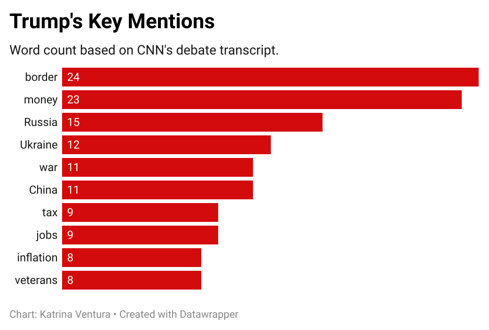

You can find the GitHub for this project here.
In a highly anticipated face-off, President Joe Biden and former President Donald Trump participated in their first debate of the 2024 election season on CNN in Atlanta.
The debate, which was marked by a series of sharp exchanges and policy discussions, provided a glimpse into the priorities and rhetorical strategies of both candidates. A detailed analysis of the debate transcript reveals interesting insights into their focus areas and speaking styles.
Joe Biden spoke a total of 3580 words (excluding stop words) during the debate. His speech focused on several key issues, as highlighted below.
Biden's transcript reveals a strong emphasis on words related to the economy. His top mentions included the words "jobs", "economy", and "tax". Biden also brought up the topic of "childcare", and "climate".
CNN also took note of three instances in which Biden's speech was inaudible for the transcript, whereas Trump was inaudible twice.
Notably, Biden refrained from directly referring to Trump as "Trump", instead opting to call him this or that "guy" 14 times, and has even gone as far as to call his opponent a "child".
TRUMP: Let’s not act like children.
BIDEN: You are a child.
Donald Trump spoke a total of 4163 words (excluding stop words), with the following mentions below.
In contrast to Biden, Trump's top key mentions revolve around international affairs. His transcript included several mentions of Russia, Ukraine and China.
The former president also concentrated heavily on immigration policies, having mentioned the word "border" 24 times.
At one point in the debate, Trump said Russia five times while he defended himself for having been quoted in a previous article by The Atlantic for referring to Americans who died in the war as 'losers and suckers'.
TRUMP: It was made up by him, just like Russia, Russia, Russia was made up, just like the 51 intelligence agents are made up, just like the new thing with the 16 economists are talking. It's the same thing. Fifty-one intelligence agents said the laptop was Russia disinformation. It wasn't. That came from his son Hunter. It wasn't Russia disinformation.
While the words they chose to emphasize provided insight into their policy focuses, the words left unsaid were equally telling.
On questions surrounding the ongoing conflict in Gaza, Biden mentions Israel six times but not once uttered the word Palestinian or Palestine only mentioning the Hamas. When asked about his government's response to the conflict, Biden discussed the ceasefire plan and referred to the Palestinians as innocent people.
BIDEN: In the meantime, what’s happened in Israel? We’re finally – the only thing I’ve denied Israel was 2,000-pound bombs. They don’t work very well in populated areas. They kill a lot of innocent people. We are providing Israel with all the weapons they need and when they need them.
Trump, on the other hand, did not once mention "healthcare" during the debate, instead switched between "Medicare" and "Medicaid". Trump also mentioned abortion several times but did not talk about "childcare".
TRUMP: Well, he’s right: He did beat Medicaid (ph). He beat it to death. And he’s destroying Medicare, because all of these people are coming in, they’re putting them on Medicare, they’re putting them on Social Security. They’re going to destroy Social Security.
The first debate of the 2024 election season provided a clear contrast between Biden and Trump's priorities and rhetorical strategies. As the election season progresses, it will be crucial to scrutinize how these verbal commitments translate into tangible policies and their respective party's platforms.